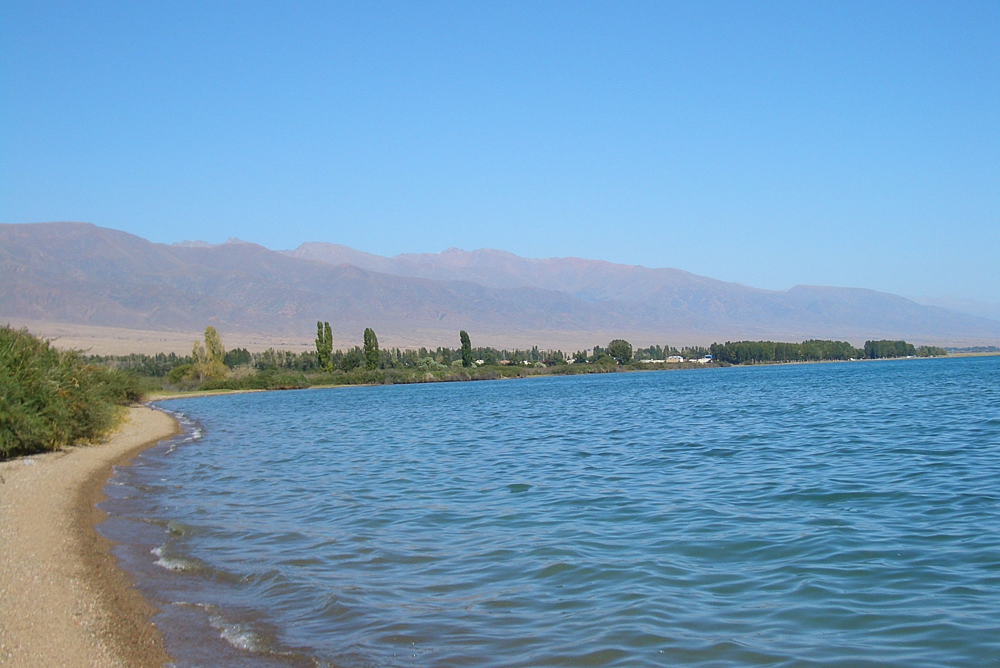
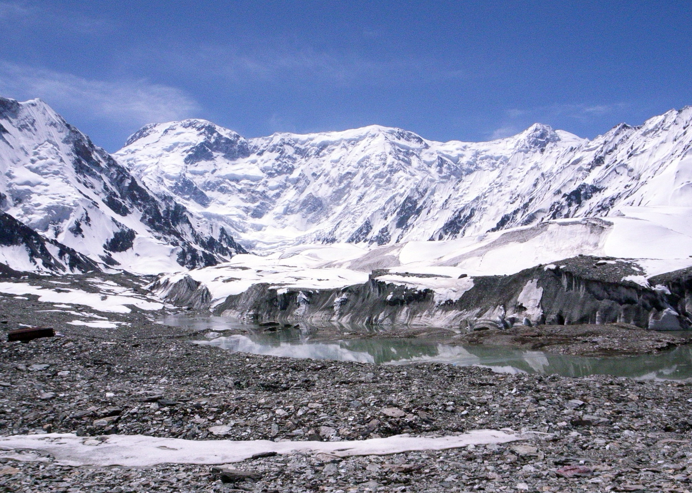
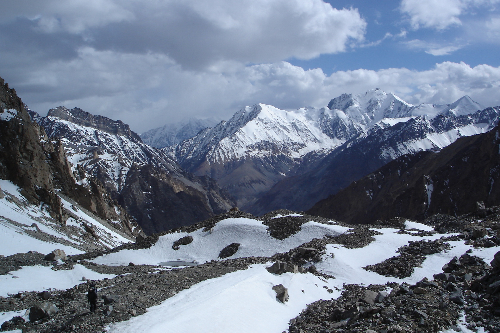
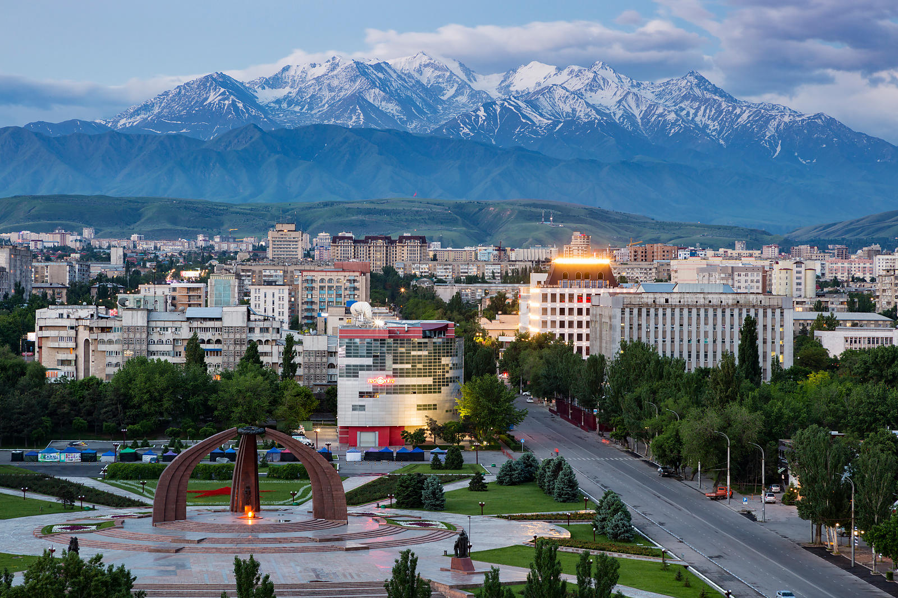

Lake Issyk Kul

Jengish Chokusu

Fergana Range

Pamir Range

Tian Shan Range

Bishkek





Kyrgyz and Russian are the two official languages of Kyrgyzstan, the latter being the language of interethnic communication; around three fourths of the population speaks Kyrgyz and 9 percent speak Russian. Uzbek is spoken by about 15 percent of the population based of 2009 estimates. Kyrgyz is a Turkic language. During the Soviet era, it lost many native speakers. Since independence, there has been a concerted effort among ethnic Kyrgyz to reestablish their language. It is written in the Cyrillic alphabet, a result of Soviet Russian domination.
The State Flag of the Kyrgyz Republic consists of a red field charged with a yellow sun that contains a depiction of a tündük, the opening in the center of the roof of a yurt. Adopted in 1992 and updated in 2023, features a red field representing bravery, a fourty ray yellow sun symbolizing peace and prosperity, and a central tunduk yurt roof representing home and unity. The fourty rays denote the tribes united by the hero Manas, creating a symbol of national identity.
Hi, I am the creator behind this exploration. My goal was to blend modern web technologies like Lenis, Flexbox, and Tailwind with the raw beauty of Kyrgyzstan to create a truly immersive digital journey.
This project is a tribute to the Land of Celestial Mountains. It is designed as a non linear experience through the geography and culture of Central Asia, using motion to mirror the fluid nature of discovery.